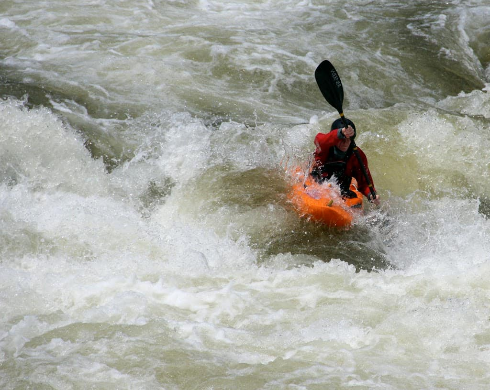
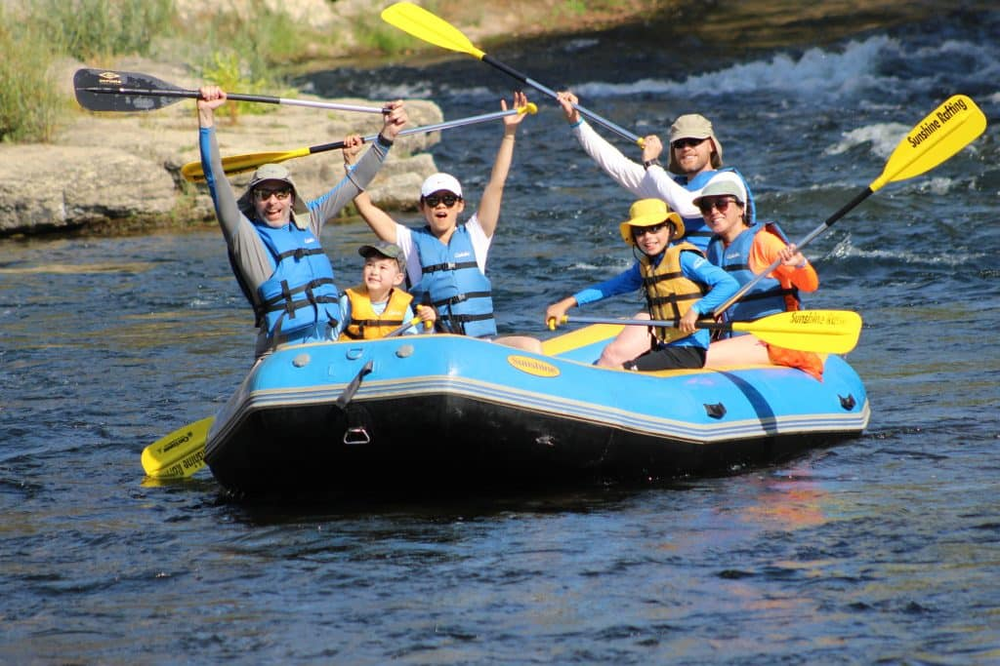
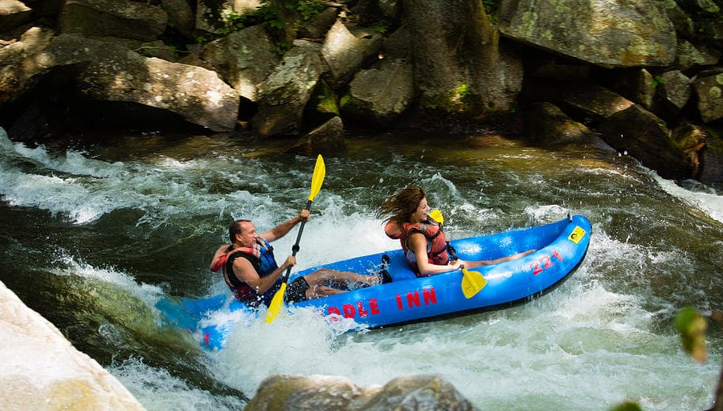

Hi! My experience was ht ebest experience in my life since I was 30 years old, now I'm 31 hahaha! It's a joke, I'm 50 years old. I took the trip "El rapido del Diablo", and it was so exciting! I was so nervious at the beggining, but the equipament helped me to feel a little bit more protected. I have to say that the equipament is very safe because before the trip I saw how the personal was verifying that everything was in order. - John Thomas
Trips information and experiences
| Trip | Information | Risk level | Normal cost (2-3 people) |
|---|---|---|---|
| Between Rocks | You will travel for a rapid with a lot of rocks in the path! | Middle | $70 |
| Rafting Morning | During the day the rapid is calm. You can enjoy a beautiful scenery | novice | $60 |
| El Rapido del Diablo | The best adventure if you like adrenaline. You will travel along a river that has curves and rocks, and you will see how fast you will go! | advanced | $80 |
| The Snake Path | The Snake Path is similar to Rafting Morning. The difference is that in this trip you will cross between 2 mountains | Novice | $65 |
| The Calm Waters | The Calm Waters is good experience for Families with children from 6 to 10 years old. It is the best way to teach them how to rafting. | Novice | $60 |
Detailed Trip Experiences
Hello there! My name is Sam. I came here to have a good time with my family. But instead of that I had an excellent time with them. The trip that we took was "The Snake Path". And I can say that everything was beautiful. I felt how my family got united. I was afraid because of my children, they are 6 and 8 years old. But the personal and the equipament helped me to feel calmer. The adventure makes it worth the price! - Sam Carter
Hi my friends! I took the "Between Rocks" adventure. I came here with my wife. She enjoyed it a lot! And if she is happy, me too. All the personal was very kind and all the time was paying attention to any concern about the trip that we had hahaha. The place is beautiful and has a lot of activities for any age, I really liked that. - Randy Lund
If you want to contact with us...